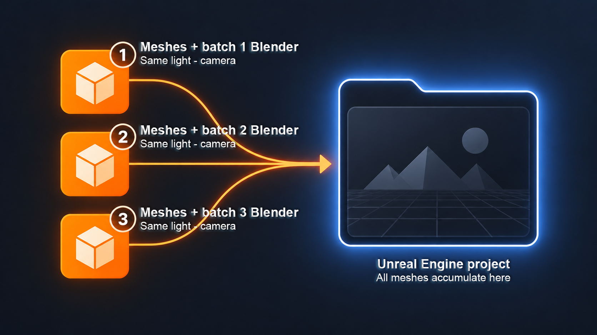
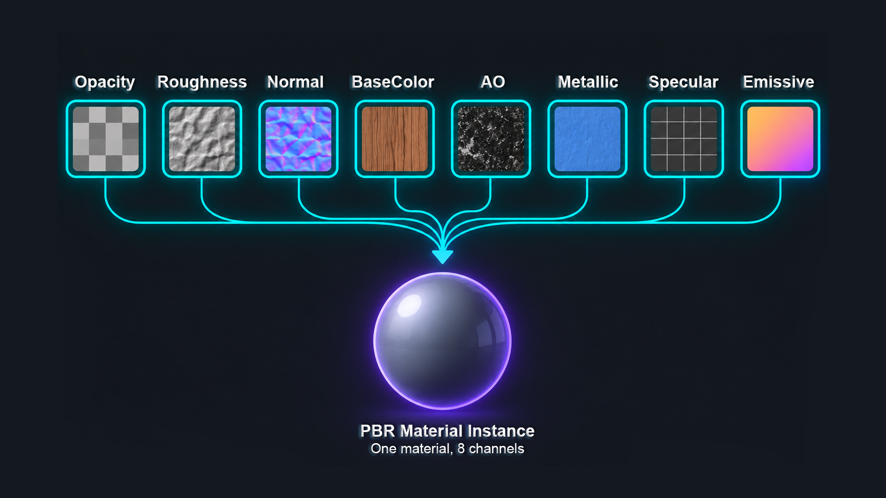
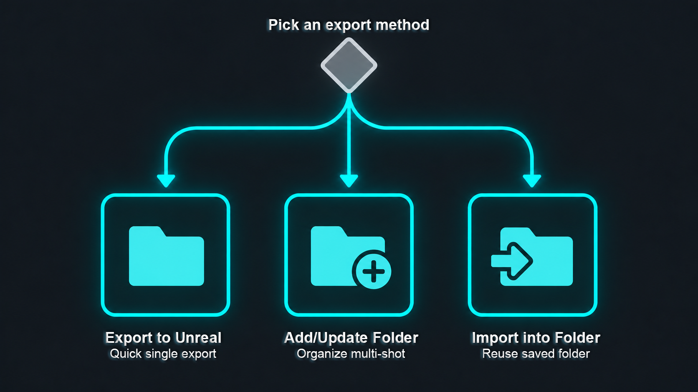
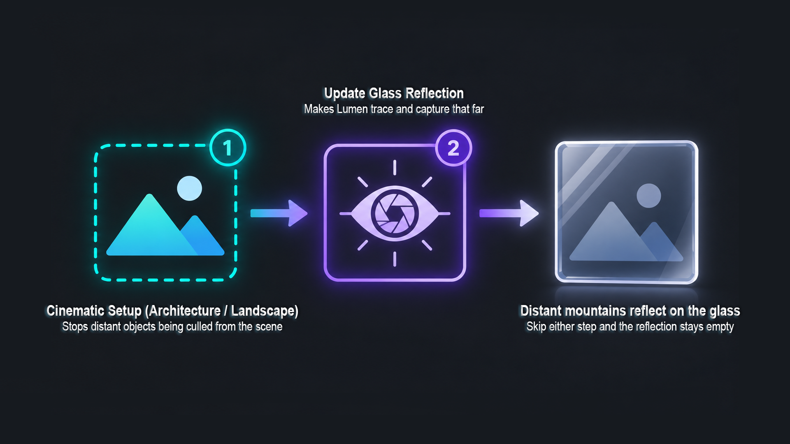
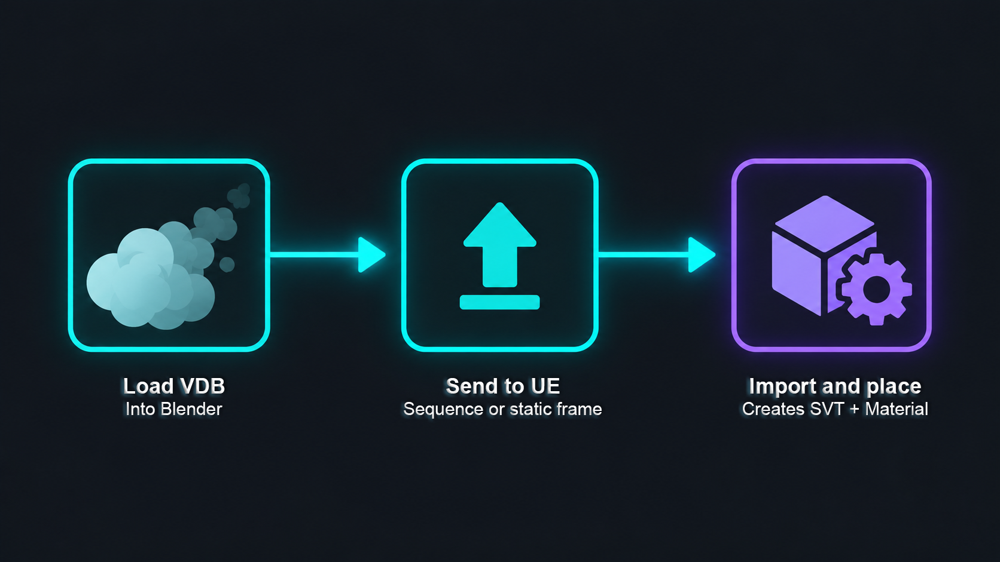

BlendReal™ - Cinematic Pipeline UE5
1.Why Choose BlendReal?

🔶 Free Updates — One-time purchase includes all future updates at no extra cost (new features, improvements, and bug fixes).
🔶 Technical Support — Direct help with installation issues, unexpected behavior, workflow problems, or Blender → Unreal integration.
🔶 Official Releases — Always receive the official version maintained and distributed by the developer.
🔶 Complete Documentation — Full documentation covering installation, setup, usage, troubleshooting, and FAQs.
🔶 Continuous Development — Your purchase helps fund ongoing development, testing, and optimization of the product.
🔶 Your Feedback Matters — Report bugs, suggest improvements, or request features. User feedback directly influences future development priorities.
🔶 One Purchase, Ongoing Value — You're not just buying a file. Your license includes the product, updates, documentation, and support throughout the continued development of BlendReal™.
2.BlendReal™ - Cinematic Pipeline UE5


✦Automated Blender → Unreal Engine 5 Cinematic Pipeline
✦13 Steps. 3 Integrated Systems. 1 Complete Pipeline.📌 BlendReal™ transforms the Blender → Unreal Engine 5 process into a step-by-step guided workflow, taking you from a Blender Scene to a cinematic-ready Unreal Engine Scene without requiring you to master complex technical setups in Unreal Engine.
📌 13-Step Guided Workflow — BlendReal™ guides you through every step, from a one-time, per-UE-install Remote Execution setup, enabling Movie Render Queue, creating PBR/Glass Master Materials, setting up the Master Sequence, exporting Meshes & Animation, configuring Camera/FPS/Draw Distance, Two Sided, saving Level + Content, all the way to VDB export and Cinematic Setup. You don't need to memorize countless settings or search for individual steps in UE.
📌 More than just an Export tool. BlendReal™ is a pipeline consisting of 3 integrated systems that communicate with each other
▣ Blender → Unreal Pipeline— Export, Camera, Animation, Mesh Prep, Materials, Sequencer, Render-to-MP4
▣ UDS — Cinematic Sky & Lighting— Sky, Time of Day, Lighting, Fog & Presets
▣ VDB — Cinematic Volume— VDB, SVT, Volume, Materials & Lighting📌 From a single Sidebar (N-panel) in Blender, BlendReal™ automates tasks that would normally require manual setup in UE: FBX, Camera, Animation, Mesh cleanup, Materials, Sequencer, Sky, Lighting, VDB, Movie Render Queue, and even converting your rendered sequence to a shareable MP4.
📌 You don't need to be an Unreal Engine expert. If you already have Blender skills and only basic Unreal Engine knowledge, BlendReal™ provides a clear workflow to guide you step by step from bringing your scene into UE to setting up a cinematic render.
📌 For experienced Unreal Engine users, BlendReal™ helps eliminate repetitive tasks, batch processing, and manual setup — especially useful for Wide Shot / Extreme Wide Shot scenes with multiple meshes, cameras, animations, lighting, and VDBs.
📌 13 Steps. 3 Integrated Systems. 1 Complete Blender → Unreal Pipeline.
📌 From Blender Scene to Cinematic Render — Without the Complex Setup.
3.What's new?

V1.0.1
🔷 BlendReal - Main Pipeline
- 🌐 Global Remote Execution — enable once per UE install and it applies to every project opened with that UE, instead of repeating setup per project; original settings are backed up automatically and can be restored
- 🗂️ Split configuration — global settings (paths, ffmpeg, etc.) are saved once, while per-project settings now live in a dedicated file next to each
.blend, so switching between multiple.blend/UE projects no longer carries over the wrong values- 💾 Export / Import Config Backup — save a backup copy of your configuration to any folder (cloud, USB, etc.) and restore it any time
- 🔍 Detect Running UE Project — auto-fills the
.uprojectpath by scanning for an already-open UE Editor- 📳 Add Camera Shake — one-click handheld-style camera shake (amplitude / frequency / pulses) layered on top of existing camera animation, non-destructive and re-runnable
- 🧰 Mesh Utilities panel — new one-click tools: Create Proxy Collision (Convex Hull) auto-named for UE to detect, Convert Triangles to Quads, Join Meshes, and Split Joined Mesh by Loose Parts
- 🕘 Folder Name / Subfolder history — remembers previously used export folder and subfolder-sequence names for quick reuse
- 🎬 Explicit Master Sequence tools — dedicated Create/Update Master Sequence and Bind Camera to Camera Cuts Track buttons, plus a Refresh Camera List
- 🪟 Reworked Glass Material system — auto-detects glass materials, supports Global Defaults + Per-Material Override, adds Apply Glass Material, Select All Glass Objects, Update Glass Reflection, Force UDS Sky Reflection, and an optional Fix Glass Flicker in Movie Render Queue fix
- 🔍✅ Two Sided — Dry Run then Apply — preview how many Materials/Material Instances would be affected before committing, instead of applying blind
- 🗂️✔ Save All — Level + Content — one click forces Always Loaded on every actor and saves the entire Level + Content (including External Actors)
- 🎞️ Convert Render Sequence to MP4 (ffmpeg) — turn your Movie Render Queue EXR/PNG sequence directly into an MP4, with correct Linear EXR → sRGB color conversion, quality presets, and an optional glass-edge fringing fix
- 🚀 Live Trail updates — push new Niagara trail parameter or position values to already-spawned ships in UE without re-exporting (requires the BlendReal_SpaceshipTraffic add-on)
🔷 UDS - Ultra Dynamic Sky Control
- 🎨 13 built-in cinematic sky presets covering a range of lighting looks (Golden Hour, Overcast, Night, Dawn, Storm, Dusk...) — instantly choose a ready-made look that matches your shot
- Complete Cinematic Setup: light color temperature, intensity, volumetric scattering, shadow distance, fog density, and fog falloff
- Save/load/back up your custom presets
- Export sky parameters to the UE project as JSON, import them back from UE into Blender, or apply them directly via Remote Execution
🔷 VDB - Volume Pipeline
- 3-step workflow: Load VDB into Blender → Send VDB Files to UE Project (copy frames + write a transform manifest) → Place VDB in UE Scene via Remote Execution — automatically convert to SVT (Sparse Volume Texture), create a Material Instance, spawn a Heterogeneous Volume actor, and automatically assign Material/Animation/Transform
- Supports both full VDB animation sequences and a single static frame
- VDB Fill Light — dedicated Directional Light for illuminating VDBs without affecting the environment
- VDB Shadow Light — dedicated Directional Light for casting VDB shadows onto the ground without interfering with UDS Sun/Moon shadows
- Point Light follows VDB, with true two-way synchronization with UE — reads Intensity/Location animation directly from the UE Sequencer into Blender
- Apply Flicker to Light — fire/explosion flickering effect using a Noise Modifier (Scale/Strength/Depth) combined with an uneven Auto-ramp (fast rise, slow fall)
- Create Material Presets: 🔥 Fire / 💨 Smoke / ☁️ Cloud — Density/Albedo/Blackbody/Temperature (Kelvin) parameters tuned for physically accurate fire color
- Cinematic Setup — quick setup dialog for Console Variables (Heterogeneous Volumes render quality), DirectionalLight, VDB Material, ExponentialHeightFog — now auto-detects an existing Ultra Dynamic Sky actor to avoid double clouds/fog conflicts instead of just warning about them
- 🏛️ Cinematic Setup (Architecture / Landscape) — a new lightweight version of Cinematic Setup for non-VDB scenes: DirectionalLight + Fog only, no VDB-only console variables
- Clean Orphaned Bindings — one-click cleanup of leftover Sequencer bindings if UE crashed during a previous Place VDB run
- Save/load/delete custom presets for Cinematic Setup, Material, and Point Light
4.System Requirements

- Operating System: Windows 10/11 64-bit
- Blender: 4.4, 5.0, or 5.2 (LTS)
- Unreal Engine: UE 5.6+, 5.7+, or 5.8+. However, VDB shadow functionality may not work correctly in UE 5.6 and 5.7, and shadows may be missing. UE 5.8+ provides proper VDB shadow support for both static VDBs and VDB animation sequences.
- Remote Execution features (directly applying Materials, Sky, Camera, etc. to UE) require Python Remote Execution to be enabled in the UE project (
Edit > Project Settings > Plugins > Python). BlendReal™ includes a built-in, one-time setup guide, so you don't need to configure it manually.- Converting rendered sequences to MP4 requires an ffmpeg executable path configured in Settings.
5.Installation

- In Blender, go to Edit > Preferences > Add-ons
- Click Install from Disk... and select the downloaded
.zipfile- Check the box next to BlendReal™ - Pipeline UE5 in the Add-ons list to enable the add-on
- Open the Sidebar in the 3D Viewport (press
N) and find the BlendReal™ tab- If Blender reports that the add-on is incompatible, check that your installed Blender version is included in the supported versions listed under System Requirements

6.Updating to a New Version

- Before updating, back up your Presets and personal configuration (use Export Config Backup in the Settings box).
- Remove the current version from Preferences > Add-ons → expand BlendReal™ → click Remove.
- Install the latest
.zipfile following the installation steps above, then restart Blender.
7.Features - 3 Tools, 1 Sidebar Tab

🔷 BlendReal - Main Pipeline
- Bake Animation tools:
🔸 Create a Camera with a Track To Constraint in one click, automatically bake the Camera + Animation before export.
🔸 📳 Add Camera Shake — layer a short handheld-style shake (Amplitude / Frequency / Pulses) on top of the camera's existing Location animation, starting at the current frame. Re-running it on an overlapping range replaces the previous shake automatically.
🔸 Bake animation for meshes with Constraints (Track To, Follow Path, Damped Track, etc.) with a single click.
🔸 Restore Baked Constraint to restore the original constraint and adjust the camera/mesh movement at any time.

- 🧰 Mesh Utilities — one-click cleanup tools for exported meshes:
🔸 Batch Apply Rotation (preserving Location + Scale) and Apply Scale (preserving Location + Rotation).
🔸 Apply Naming Convention — batch-rename selected meshes with an Island_/Building_/Landscape_ prefix + original name + index.
🔸 Fix Normals Per UV Island (radial outward) — more precise than standard Recalculate Normals.
🔸 🧱 Create Proxy Collision (Convex Hull) — duplicates the selected mesh and replaces each separate piece with its own Convex Hull, named so UE auto-detects it, enables Collision, and hides it from render. A Voxel Remesh fallback is also available. Requires the mesh to already use this Naming Convention (Island_/Building_/Landscape_ prefix) — run Apply Naming Convention first if it doesn't yet.
🔸 ◻️ Convert Triangles to Quads — merges adjacent triangle faces back into quads, fixing visible diagonal seams (e.g. on glass panes).
🔸 🔗 Join Meshes and ✂️ Split Joined Mesh (by Loose Parts) — quickly combine or separate mesh pieces without leaving the panel.

- UE Project Setup Checklist (13 steps, follow in order) — walks you from a bare UE project to a fully configured cinematic scene:
🔸 🌐 1. Enable Global Remote — one-time, per-UE-install Remote Execution setup; applies to every project opened with that install, original settings backed up automatically, with a Restore Remote to Original option.
🔸 2. Open / Reopen UE — launches UE directly from Blender, or opens UE's Project Browser if no project is set yet.
🔸 3. Enable Movie Render Queue Plugin, with an optional Glass Materials toggle that reveals all glass-related settings only when needed.
🔸 4. Create PBR / Glass Master Material (run once per project).
🔸 5–6. Close and Reopen UE so the new plugin/materials take effect.
🔸 7. Export Methods — pick one of 3 workflows (see below), with 🕘 folder-name history, Nanite Settings, and a per-export Two Sided option.
🔸 🎬 8. Create/Update Master Sequence (camera + meshes) and Bind Camera to Camera Cuts Track.
🔸 9. Set Filmback + FPS + Max Draw Distance (see dialog below).
🔸 10. Two Sided — Dry Run then Apply.
🔸 11. Save All — Level + Content.
🔸 Optional Add-ons (Trail Package, not part of the numbered flow) → 12. Export VDB + Cinematic Setup (VDB tab) → 13. Convert Render Sequence to MP4.

- 💾 Settings box — one place to configure and protect your setup:
🔸 Paste or auto-detect the.uprojectpath from a currently running UE Editor.
🔸 Save / Reload Config, plus Export Config Backup and Import Config Backup to move your configuration between machines or back it up externally.
🔸 Global paths (UE Editor, ffmpeg, Trail package folder) are shared across projects; per-project settings (Master Sequence path, MRQ/MP4 folders, FPS, color mode...) are saved next to each individual.blendfile, so different projects never overwrite each other's values.

- Batch Export FBX:
🔸 With Animation via Sequencer or static FBX, with automatic Nanite Settings applied on import (Enable Nanite Support, Explicit Tangents, Lerp UVs, Shape Preservation = Preserve Area, Preserve Area for Opacity) and Apply Two Sided — all in one click.
🔸 With full PBR Texture support — 8 channels: BaseColor, Normal, Roughness, Metallic, AmbientOcclusion, Emissive, Opacity, Specular.

🔸 There are 3 Export workflows, with 🕘 remembered folder/subfolder history so you don't have to retype names for recurring shots:

◇ Export to Unreal: Used for small projects when you want UE to automatically create a BlenderExports folder containing assets exported from Blender and imported into UE.

◇ Add New/Update Folder and Export: Most commonly used when you want to clearly organize and manage multiple scenes/shots within a project.

◇ Import into Folder: Used when a folder already exists in UE and you want to export additional assets directly into that folder.

- 🎬 Master Sequence & Camera tools:
🔸 Create / Update Master Sequence — merges related Level Sequences (camera + meshes, whether exported separately or together).
🔸 Bind Camera to Camera Cuts Track and Refresh Camera List — scans all CineCameraActors in the current UE Level and binds the one you pick.

- Automatically organize the UE Outliner — every actor an export spawns or updates (meshes and cameras together) is placed into one Outliner folder named after that export's destination folder, so nothing needs manual sorting afterward.

- Batch export Niagara System Trail values and import them into UE with a single click, plus live updates without re-export: push new Trail Params or Trail Positions to already-spawned ships. This feature requires the BlendReal_SpaceshipTraffic add-on

- Set Filmback + FPS + Max Draw Distance — a single dialog to batch-configure:
🔸 Filmback/Sensor (16:9 Landscape or 9:16 Portrait for Shorts/Reels) and Focal Length for all CineCameraActors.
🔸 Master Sequence FPS and Max Draw Distance, with Force Always Loaded to prevent World Partition culling during rendering.
🔸 Motion Blur reduction and locked Manual Exposure, to prevent Auto Exposure from flickering the frame.
🔸 Batch Emissive Brightness for materials BlendReal previously baked emissive into (e.g. glowing windows).

- 🪟 Glass Material system:
🔸 Create Glass Master Material (run once) and Apply Glass Material to instantly turn the active slot into glass.
🔸 Auto-detects glass materials by their Transmission value, with Global Defaults and Per-Material Override (tint, roughness, thickness, IOR...).
🔸 Select All Glass Objects to quickly re-select every glass mesh in the scene.
🔸 Update Glass Reflection and Force UDS Sky Reflection — refresh the Sky Light cubemap and correct the UDS Sky Light Mode on the currently open UE level, without re-exporting.
🔸 Optional Fix Glass Flicker in Movie Render Queue — removes flicker on glass surfaces during MRQ renders (trade-off: glass stops reflecting off-screen objects).
🔸 ℹ️ For distant objects (e.g. far mountains) to reflect on glass, both steps matter: Cinematic Setup (Architecture / Landscape) keeps them from being culled out of the scene, then Update Glass Reflection makes Lumen actually trace and capture that far. Skip either one and the reflection stays empty.

- Two Sided workflow:
🔸 A safer per-export Two Sided option inside Export Methods, applied only to the meshes you're exporting right now.
🔸 A global Dry Run (preview how many Materials/Material Instances would be affected) followed by Apply, for when you need to fix Two Sided across the whole project at once.

- 🗂️✔ Save All — Level + Content — one click forces Always Loaded on every actor in the level and saves the entire Level + Content, including External Actors, so nothing is left unsaved before closing UE.

- 🎞️ Convert Render Sequence to MP4 (ffmpeg) — turn the EXR/PNG image sequence rendered by Movie Render Queue directly into a shareable MP4, without leaving Blender:
🔸 Auto-detects the MRQ output folder from your project, or point to a custom one.
🔸 Correct Linear EXR → sRGB color conversion so the result matches the UE Editor Preview, VLC, and After Effects.
🔸 Quality presets (Draft / Standard / High / Custom CRF) and an optional fix for glass/transparent edge fringing.
🔸 Delete Rendered Sequence afterward to free up disk space once you've confirmed the MP4 looks right.

🔷 UDS - Ultra Dynamic Sky Control
- 13 built-in cinematic sky presets covering a wide range of lighting looks — from Golden Hour to Overcast Heavy, Dust Storm, Blue Moon, and more — instantly choose a ready-made look instead of dialing in dozens of sliders

- Complete Cinematic Setup: light color temperature, intensity, volumetric scattering, shadow distance, fog density, and fog falloff

- Save, load, and back up your custom presets

- Automatically export sky parameters to the UE project as JSON, import them back from UE into Blender, or apply them directly via Remote Execution

🔷 VDB - Volume Pipeline
- 3-step workflow: Load VDB into Blender → Send VDB Files to UE Project (copy frames + write a transform manifest) → Place VDB in UE Scene via Remote Execution — automatically convert to SVT (Sparse Volume Texture), create a Material Instance, spawn a Heterogeneous Volume actor, and automatically assign Material/Animation/Transform

- Supports both full VDB animation sequences and a single static frame

- VDB Fill Light — dedicated Directional Light for illuminating VDBs without illuminating the surrounding environment. Its intensity is automatically interpolated along a Day/Night curve based on the Ultra Dynamic Sky's Time of Day, with manual override available

- VDB Shadow Light — dedicated Directional Light for casting VDB shadows onto the ground without casting shadows from the surrounding environment, without interfering with UDS Sun/Moon shadows

- Point Light follows the VDB, with true two-way synchronization with UE — reads Intensity/Location animation directly from the UE Sequencer into Blender

- Apply Flicker to Light — fire/explosion flickering effect using a Noise Modifier (Scale/Strength/Depth) combined with an uneven Auto-ramp (fast rise, slow fall)

- Create your own custom material presets: 🔥 Fire / 💨 Smoke / ☁️ Cloud — Density/Albedo/Blackbody/Temperature (Kelvin) parameters tuned for physically accurate fire color

- Cinematic Setup — quick setup dialog for Console Variables (Heterogeneous Volumes render quality), DirectionalLight, VDB Material, ExponentialHeightFog — auto-detects an existing Ultra Dynamic Sky actor in the level to avoid double clouds/fog instead of just warning about it. Includes DirectionalLight sync from Blender (color + rotation), using a sun-path formula verified against manual shadow matching for accurate results.

- 🏛️ Cinematic Setup (Architecture / Landscape) — a lightweight one-shot version of Cinematic Setup for scenes that don't use VDB: sets up the DirectionalLight and ExponentialHeightFog, and applies the same scene-wide View Distance Scale and Ray Tracing Culling console variables as the main Cinematic Setup (needed so distant geometry like far mountains isn't culled out of the scene) — without any of the VDB-specific material or lighting settings

- Clean Orphaned Bindings — clean up leftover Sequencer bindings with a single click if UE crashed during a previous Place VDB run

- Save/load/delete custom presets for Cinematic Setup, Material, and Point Light
8.License & Source Code

- You should have received a copy of the GNU General Public License along with this program. If not, see http://www.gnu.org/licenses/.
- The installation package includes the add-on's Python (
.py) source files packaged in a.ziparchive.
9.Support

For any questions or update requests, please contact us through the BlendReal™ Discord Support channel.
10.FAQ

✅ Does the add-on require Unreal Engine to use?
Not all features require Unreal Engine. Some features can be used directly in Blender. Features that use Remote Execution to directly apply Materials, Sky, Camera, and other settings to Unreal Engine require an Unreal Engine project to be open with Python Remote Execution enabled using the automatic, one-time setup button provided in the add-on UI.

✅ Does the add-on automatically update when a new Blender version is released?
No. When a new Blender version is released outside the list of supported versions, a compatible add-on version will be released through the same purchase link. You can download the new version once the add-on has been updated.
✅ Does the add-on support all Blender versions?
No. The add-on only supports the Blender versions listed in the product's System Requirements. Newer Blender versions will be supported when a compatible add-on version is released.
✅ Is there a limit to the number of computers I can install the add-on on?
The license is based on the number of Seats (users), not the number of computers. One Seat is intended for one user and may not be shared with another person. The user may install the add-on on their own computers for their work.
✅ Do I receive updates after purchasing the add-on?
Yes. Updates and compatibility fixes will be provided to customers who have purchased the add-on through the product page.
✅ Do I have to pay for updates?
No. Updates and bug fixes released for the current product version will be provided free of charge to customers who have purchased the add-on. If the product price is adjusted in the future, the new price will only apply to new purchases and will not affect customers who purchased the product previously.
✅ How can I know when a new update is available?
Updates will be released on the product page. Simply revisit your purchase link to check for and download the latest version.
✅ How do I update the add-on?
Before updating, we recommend backing up your Presets and personal configuration (via Export Config Backup). Then remove the current version of the add-on and install the latest version from the product page.
11.What You Can Create


BlendReal™ - Cinematic Pipeline UE5 Tutorial Videos
1.Connecting Blender to Your UE Project
This one-time setup gets a brand-new project ready for every BlendReal export that follows

🔸Global vs. Local Fields
Global vs. Local Settings — What Gets Saved Where
Understand which BlendReal settings are shared across every project and which are saved per-project, so you always know where a value is coming from.
BlendReal keeps its settings in two separate places, depending on whether a value makes sense for every project or only for the one you're currently working on.
Global fields are saved to a single config file shared by every project you open — set them once, and they're there no matter which .blend file or Unreal project you're working in.
Local fields are saved to a small sidecar file next to your current .blend file — each project keeps its own values, so switching between projects never mixes up paths or settings that don't belong together.
Global Fields
UnrealEditor.exe Path: The engine executable itself — the same for every project on this machine.
ffmpeg.exe Path: Used by Convert Render Sequence to MP4. Download **Link and Install
Trail Package Folder: The Migrate output folder containing Trail_Package, reused whenever you install/update trails on a new project.
Use FPS Master Sequence: Convert to MP4 setting.
Quality Preset: Convert to MP4 setting (Draft / Standard / High / Custom).
Custom CRF: Convert to MP4 setting.
Local Fields
.uproject Path: The specific Unreal project this .blend file exports to.
Unreal Project Path: The project's Content folder.
Master Sequence: Path of this project's Master Sequence.
Master Sequence Scope Folder: Keeps multi-shot projects from merging in sequences from other shots.
Camera Actor Label: Which camera this project binds to the Camera Cuts Track.
Sequence Subfolder: Where this project's Level Sequences are saved.
MRQ Output Folder: Where this project's rendered image sequence lands.
Save MP4 To: Output location/filename for this project's converted video.
Custom FPS: Convert to MP4 setting, used when Use FPS Master Sequence is off.
Color/Gamma Mode: Convert to MP4 setting for this project's render output.
Custom Gamma: Convert to MP4 setting.
Fix Alpha Fringe: Convert to MP4 setting for glass/transparent edges.
🔸Good to Know
Local settings are written the moment you click Save Config, and from then on automatically every time you save your .blend file. If you haven't saved your .blend file yet, there's nowhere to place its sidecar file — save the .blend first, and your Local fields will be written on the next save.
Save Config always saves both at once: Global fields go to the shared config file, and Local fields go to the sidecar next to your currently open .blend.
Export Config Backup / Import Config Backup back up and restore your Global fields as a single file — handy when moving to a new PC or reinstalling.
Camera and render settings from the Set Filmback + FPS + Max Draw Distance dialog (Sensor Size, Focal Length, Motion Blur, Exposure, Emissive…) are saved directly inside your .blend file itself, not through Save Config. They'll always be there when you reopen that particular .blend, but they're not included in Export Config Backup.
1. Enable Global Remote (run once per UE install). Writes Remote Execution settings straight into Engine/Config/BaseEngine.ini, so every project you ever open with this UE install already has it enabled — no per-project setup. Once detected, the button locks itself and shows "already enabled."
2. Open UE. One button, two behaviors: if no project path is set yet, it opens UE's own Project Browser so you can create a brand-new project; if a path is already set, it opens that project directly. It disables itself while UE is already running, so you can't accidentally launch a second instance.
.uproject Path & Detect Running UE Project. Paste your project's path once it exists, or use Detect Running UE Project to auto-fill it from a UE Editor that's already open instead of browsing for the file by hand.
Save/Reload Config + Export/Import Config Backup. Save your settings so they persist between Blender sessions, and back up your entire configuration to a single file — useful when moving to a new PC or reinstalling Blender.
Install UE Import Script. Installs the Python-side script BlendReal needs inside your UE project, so Remote Execution commands sent from Blender have something on the UE side to run.
3. Enable Movie Render Queue Plugin. Turns on UE's Movie Render Queue for the current project (needed later for rendering). Shows "already enabled" once detected.
Glass Materials toggle. A single ON/OFF switch that reveals every glass-related setting elsewhere in the addon. When ON, its values are written straight to DefaultEngine.ini and re-applied automatically every time you open or reopen the project — you don't need to remember to reapply anything.
4. Create PBR Master Material (and Create Glass Master Material, if the Glass toggle above is ON). One-time creation of the master material(s) that every future export will instantiate Material Instances from.
5–6. Close & Reopen UE Project. After the one-time setup above, close UE manually (make sure it's saved), then use the same "Reopen UE Project" button to relaunch it cleanly with everything applied.
2.Exporting Mesh Objects to Unreal Engine
Export any mesh — from spaceships to full scenes — into Unreal Engine with Nanite, PBR textures, and organized UE folders.
Architecture


SpaceShip


Vegetation & foliage showcase rendered in Unreal Engine 5 using the BlendReal™ – Cinematic Pipeline UE5 workflow

Pick one of 3 export methods. Export to Unreal — a straight export of whatever's currently selected, for quick single shots. Add New/Update Folder — exports into a brand-new or existing named folder, ideal for organizing a multi-shot project as it grows. Import into Folder — exports into an existing folder you've already used before, picked from history, so repeat exports into the same place take one click.
Batch Export Settings. Legacy (Single Shot) sends everything to UE in one call — simplest, no overhead. Batched by Poly Count splits a very large export into chunks by a poly-count threshold you set, fully finishing each batch in UE (import + material + actor spawn) and freeing memory before starting the next — slower overall, but keeps peak RAM/VRAM lower on huge scenes.
Nanite Settings. Enable Nanite Support is on by default for imported StaticMeshes — disable it only for meshes that need Vertex Animation Texture or complex World Position Offset. With Nanite on, you also get: Explicit Tangents (preserves original tangents instead of letting Nanite recompute them — recommended for ComfyUI/Trellis meshes with tiny or irregular UVs), Lerp UVs (smoother UV interpolation on fallback LOD meshes), Shape Preservation = Preserve Area (stops foliage thinning out at a distance), and — only shown when Glass Materials is enabled — Auto-disable Nanite on Glass (forces Nanite off specifically on glass materials, since Nanite re-triangulates geometry its own way and can leave a visible diagonal seam in Lumen reflections on flat glass panes).
Preserve Area for Opacity. Auto-enables mip scaling on Opacity/Alpha textures so foliage using Masked materials doesn't visibly fade out at a distance.
Advanced Import Settings (Collision / Lightmap UV). Two manual override switches for UE's own automatic Auto Generate Collision and Generate Lightmap UVs import steps. These are troubleshooting switches, not a guaranteed fix for any specific slow-import case — use them if you suspect one of these two importer steps is the reason a particular mesh is importing unusually slowly, and check the tooltip in-app for the current recommended default for each.
Two Sided (current export only). Sets Two Sided=True on Material Instances of just the meshes in this export — safer than the separate, addon-wide Two Sided tool further below, since it can never touch unrelated assets elsewhere in your project.
Combine Meshes. Available whenever more than one object is selected — merges everything into a single exported mesh instead of one FBX per object.
Animation Export. Appears automatically for skeletal meshes or objects with animation. Turn on Export Animations, then choose Animation Sample Mode: Every Frame always matches Blender exactly (including Bezier easing) but is heavier with many animated meshes at once; Original Keyframes Only is lighter but will drift from Blender if your keyframes use Bezier easing. Choose Level Sequence mode: Shared Sequence puts everything animated in this export into one sequence; Separate Sequence Per Object gives each object its own, so you can combine multiple shots later with a Shot Track. The Subfolder Sequence field remembers all of these settings per name, so reusing the same subfolder auto-fills them again next time.
3.Camera Animation, Sequencer & Outliner Organization
Bake camera animation into Unreal Engine and watch BlendReal automatically organize it into folders and a ready-to-use Sequencer

Create Camera Track-To Constraint. Spawns 1 Camera and 1 target Empty already linked with a Track To constraint, positioned around your current selection (or the 3D Cursor if nothing's selected). More stable to preview live than a Damped Track constraint.
Bake Animation (Camera Track To). Bakes the live constraint-driven motion of both the camera and its target into real keyframes, so it exports and plays back reliably in UE.
Restore Baked Constraint. Brings the Track To constraint back after baking, so you can re-edit the camera move and bake again instead of starting over from scratch.
Add Camera Shake. Layers a short handheld-style shake on top of the camera's existing Location animation, starting at the current frame and extending forward. It never touches Rotation — on a Track-To camera, Rotation is fully driven by the constraint anyway. Re-running it on an overlapping frame range simply replaces the shake there.
Create / Update Master Sequence. Merges the separate Level Sequences created during export (camera and meshes, whether they were exported together or separately) into one Master Sequence with a Camera Cuts Track, so playback always shows the correct camera angle. For multi-shot projects, fill in Scope Folder to avoid accidentally merging in sequences from other shots.
Bind Camera to Camera Cuts Track. Binds the camera you name to the Master Sequence's Camera Cuts Track across its full playback range — without dragging it into Sequencer by hand, which would cause UE to auto-keyframe Current Focal Length/Aperture unintentionally.
Automatic Outliner Organization. Every actor an export spawns or updates — meshes and the camera together — is automatically placed into one Outliner folder named after that export's destination folder, so nothing needs sorting by hand afterward.
4. One-Click Camera & Render Setup
Set Filmback, FPS, Draw Distance, Motion Blur, and Exposure across every camera in your scene with one click

Filmback / Sensor Size. Batch-sets Sensor Width/Height (mm) on every CineCameraActor at once — 36mm is the default (Full Frame equivalent).
Batch-set Focal Length. Optional — applies the same focal length (mm) across every camera in one pass instead of adjusting each one individually.
Master Sequence FPS. Pulled directly from Blender's own render FPS setting, so UE's playback rate always matches whatever frame rate you animated at in Blender — nothing to re-enter by hand.
Batch-set Max Draw Distance. Optional — applies the same Max Draw Distance to every StaticMeshActor in the level in one pass.
Reduce Motion Blur. Optional override, from 0 (disabled) to 1 (UE's default, fairly strong). For fast-moving meshes like spaceships, try 0.2–0.4 first rather than disabling it completely.
Lock Exposure. Optional manual Exposure Compensation, instead of relying on the camera's physical/auto exposure — useful once your Cinematic Sky & Lighting setup is already dialed in and you don't want exposure drifting shot to shot.
5. Cinematic Sky & Lighting — Presets, Custom Tuning, Live Sync & Export to UE
Apply one of 13 cinematic sky presets, fine-tune every lighting parameter by hand, keep it synced with your Blender light in real time, and send it all to Unreal Engine.

13 Built-in Cinematic Presets. One click applies a complete, ready-made sky/lighting look — Golden Hour, Overcast Heavy, Night Clear, Cold Dawn, Dust Storm, Blue Moon, Memory Fog, Clear Sky — Warm Sun, Dusk 18:00, Default, plus 3 additional cloud/fog variations. If a built-in preset ever gets edited by accident, Reset Built-in Presets restores all 13 to their originals without touching any presets you've saved yourself.
Manual Sky & Cloud Controls. Time of Day, Dawn/Dusk Time, Cloud Coverage, Cloud Speed/Direction, and overall Fog amount — the first layer to adjust after a preset if you need a specific time of day or a different cloud cover.
Sun & Shadow Controls. Sun Light Color, Sun Light Intensity, Moon Light Intensity, Sun Yaw/Pitch (sun angle), and Dynamic Shadow Distance — use this for shots that need a specific sun angle or harder/softer shadows; Dynamic Shadow Distance controls how far from camera shadows keep rendering.
Volumetric Scattering (Rayleigh). Separate atmosphere-scattering colors for Day, Dawn/Dusk, and Night — this is what gives the sky its realistic color gradient near the horizon at different times of day, more physically-grounded than just changing the sun color directly.
Sunset, Twilight & Dust Tuning. Dedicated color and intensity controls for the Sunset/Sunrise band and the Twilight band, plus an optional Dust layer (amount + color) for storm/desert looks, and Foggy/Overcast Desaturation to mute colors under bad weather.
Fog Density & Fog Influence. Base Fog Density and Base Height Fog Falloff control the physical thickness/height of the fog layer; Sky Atmosphere Fog Influence (Sun/Moon/None) controls how strongly the fog picks up color from whichever light source is currently active.
Light Shaft Bloom (Sun & Moon). An optional god-ray/bloom effect around the sun or moon disc, each with its own tint color — good for dusty or foggy shots where visible light shafts add drama.
Exposure Bias per Weather Type. Separate exposure offsets for Day, Night, Cloudy, Foggy, and Dusty conditions, so a scene doesn't suddenly look too dark or too bright the moment the weather changes.
Night Sky / Stars. Stars Intensity and Stars Color for night scenes — only relevant for Night presets/time-of-day.
Save/Load/Delete Your Own Presets + Backup/Restore Library. Beyond the 13 built-in presets, save any tuning as a new named preset, delete ones you don't need, and back up or restore your entire preset library as a single file — useful when switching computers or sharing a look across projects.
Live Sync with Blender's Directional Light. Turning on sync_color and sync_rotation makes your Blender Directional Light automatically match UDS's sun color and angle in real time, whichever side you adjust — so what you see in Blender's viewport always matches what UDS will show in UE.
Export to UE — JSON, Direct Remote Execution & Import Back. Three ways to move your sky setup into Unreal Engine: export it as a JSON file, apply it directly to a currently-open UE session through Remote Execution with no re-import step, or pull the current UDS settings from a running UE session back into Blender if someone tweaked the sky directly in UE.
6. VDB Workflow — Import, Placement, Lighting, Materials & Troubleshooting
The complete VDB pipeline in one video — from loading a VDB into Blender to lighting, materials, flicker, and fixing Sequencer issues if UE crashes.
Load VDB into Blender. Imports a .vdb file (or sequence) into Blender as a Volume object — always the first step of the pipeline.
Send to UE Project — Sequence vs. Static Frame. Two dedicated tools: Send Sequence to UE Project for an animated VDB (rolling smoke, growing fire), and Send Static Frame to UE Project for a single non-animated frame (e.g. a fixed cloud formation) — lighter on disk and import time when animation isn't needed.
Import & Place in UE (Sparse Volume Texture + Material Instance). Converts the sent VDB into UE's native Sparse Volume Texture format, automatically creates a matching Material Instance, and spawns the Heterogeneous Volume actor in your level — all in one step. This is the standard, highest-quality import path; it is memory-heavy, so files over roughly 10 GB can crash UE — split very large sequences into smaller chunks first.
VDB Fill Light. A dedicated DirectionalLight, restricted to Lighting Channel 1, that illuminates only the VDB volume — it never lights the rest of the environment. Use whenever the volume looks too dark or flat without wanting to touch your main scene lighting.
VDB Shadow Light. A second dedicated DirectionalLight (also Lighting Channel 1 only) whose only job is casting the VDB's shadow onto the ground, without interfering with Ultra Dynamic Sky's own sun/moon shadows.
Fire/Smoke/Explosion Material Presets. Ready-tuned Density Scale, Albedo Scale, Blackbody Scale, and Blackbody Temperature Scale values for common effect types — apply the closest preset first, then nudge Density (thickness), Albedo (color brightness), or Blackbody (fire heat-glow) individually.
Apply Flicker to Light. Combines a Noise Modifier with an uneven auto-ramp (fast rise, slow fall) on any light to create a natural fire/explosion flicker in a few clicks — apply it to any light near your effect, including the Fill/Shadow Lights above.
Point Light Tool (with UE Round-Trip & Custom Timing). A separate Point Light system for extra explosion/fire lighting beyond the two directional Fill/Shadow Lights: create or update a light in the scene, place it directly, read its current values back from a running UE session, and fine-tune the timing of each keyframe in its light-ramp individually instead of one uniform spacing — useful for a non-uniform "fast rise, slow decay" explosion light localized to one moment (e.g. a ship exploding mid-frame).
Save/Load/Delete Material & Point Light Presets. Both the material settings and the Point Light setup can be saved as named presets, loaded back later, or deleted — separate from the Cinematic Setup preset in the next video.
Diagnose Sequencer Bindings. A read-only, no-side-effects check that scans for orphaned/broken Sequencer bindings left behind if UE crashes while placing a VDB — run this first whenever Sequencer starts behaving oddly after a crash.
Clean Orphaned Bindings. Actually removes the leftover/broken bindings found by Diagnose Sequencer Bindings, letting you recover cleanly without hunting through Sequencer by hand — always diagnose first, then clean.
7. Cinematic Setup — One-Click Console Vars, Light, Material & Fog
Apply a full cinematic look to your scene in one click — light temperature, VDB Fill/Shadow Light, material scaling, and fog — with a dedicated variant for Architecture/Landscape scenes.

Main Light Bundle. Sets Temperature, Intensity, Volumetric Scattering Intensity, Dynamic Shadow Distance, and Far Shadow Cascade Count/Distance on your main directional light in one dialog, instead of tuning each value separately.
VDB Fill Light Bundle. Enable/disable, an intensity override (a single Manual value, or separate Day/Night values), Outliner folder placement, whether it uses Temperature, and whether it casts shadow — all configured together instead of setting up the Fill Light piece by piece.
VDB Shadow Light Bundle. The same idea as the Fill Light bundle, applied to the Shadow Light.
Material Scale Override. An Override Material Scales toggle that applies Albedo Scale and Density Scale across every VDB Material Instance in your scene at once, instead of adjusting each material individually.
Exponential Height Fog. Enable/disable plus Fog Density and Fog Height Falloff, with an option to delete the native VolumetricCloud actor if it's conflicting with your setup.
Cinematic Setup (Architecture / Landscape). A separate variant of this same one-click setup, tuned for non-VDB scenes — buildings and terrain — instead of fire/smoke scenes.
>Save/Load/Delete Cinematic Setup Presets. Save your whole configuration as a named preset, exactly like the Sky presets, so a look you've tuned once can be reapplied to a new scene instantly.
BlendReal™ - Cinematic Pipeline UE5 — UI Field Reference
This guide walks through every field on the panel, in the exact order they appear on the BlendReal™ Sidebar (View3D > sidebar
N> BlendReal™ tab group). Use it to understand what a field does, or to figure out which field to adjust when troubleshooting an unusual result.

How the addon works overall (read this first)
The Sidebar is actually 3 separate panels stacked as tabs under the same BlendReal™ category:
BlendReal™ — Blender to UE5 Pipeline— the Main Pipeline: Bake Animation, Mesh Utilities, the 13-step UE Project Setup Checklist, Export Methods, Glass Settings, the Publish Workflow (Master Sequence / Filmback / Two Sided / Save All), Optional Add-ons (Trail Package), and Convert Render Sequence to MP4.Ultra Dynamic Sky— every field UDS itself exposes, grouped into 14 collapsible blocks, plus Preset management and Export/Apply to UE.BlendReal VDB (Clouds/Fire)— the 3-step VDB pipeline (Load into Blender → Send to UE Project → Place in UE Scene), the Point Light toolkit, and the one-click Cinematic Setup dialogs.
All 3 panels are DEFAULT_CLOSED — each opens the first time you click its header in the Sidebar, and stays open/closed per session like any other Blender panel. Most settings inside each panel are Scene properties (saved inside the .blend file itself, not in Blender Preferences and not inside the addon) — a brand-new .blend uses the addon's shipped defaults; a .blend you've already saved keeps whatever value it was saved with, even after updating the addon.
Part A — Tab "BlendReal™" (Main Pipeline)
1. 🎬 Bake Animation
A collapsible box (closed by default) — the same Camera/Bake toolkit shared with BlendReal_SpaceshipTraffic, useful even without exporting to UE yet.

- Create Camera Track-To Constraint (button) — spawns a Camera + a target Empty ("CameraTarget") already linked with a Track To constraint (more stable to preview live than Damped Track).
- Add Camera Shake (button, opens a dialog) — see Add Camera Shake (dialog) below.
- Remove Constraint After Bake (checkbox, default: On) — after Bake Animation, automatically removes the original Constraint (Follow Path, Track To…) to avoid a double-transform conflict. Turn off if you still need to edit the Constraint afterward.
- Bake Animation (button) — bakes the selected object's current animation (Location/Rotation/Scale) into real keyframes, backing up every supported Constraint present (e.g. a Camera using Follow Path and Track To together, not just one of them) plus any Drivers, so nothing is silently lost.
- Restore Baked Constraint (button) — restores the exact original Constraint(s) + Target(s) + Action from before the last bake. Only works on objects previously baked via the button above. This backup data is shared with BlendReal_SpaceshipTraffic, so an object baked in one addon can be restored from the other.
2. 🧰 Mesh Utilities
A collapsible box (closed by default) — fully independent tools for cleaning up exported meshes.

- Apply Rotation / Apply Scale (buttons, side by side) — batch-applies rotation (keeping Location + Scale) or scale (keeping Location + Rotation) on every selected mesh at once, resetting the transform to its default.
- Apply Naming (Island/Building/Landscape) (button, opens a dialog) — see Apply Naming Convention (dialog) below.
- Fix Normals Per UV Island (button) — recalculates normals per UV island in a radial-outward direction (based on the object's own center of mass, independent of topology) — for cases where Blender's default Recalculate Outside / Merge + Recalculate fails.
- Create Proxy Collision (Convex Hull) (button) — see Create Proxy Collision (Convex Hull) — Redo panel below. Requires the mesh to already use the Island_/Building_/Landscape_ naming convention (run Apply Naming first if it doesn't yet).
- Convert Triangles to Quads (button) — merges adjacent triangle faces back into quads, fixing visible diagonal seams (e.g. on glass panes).
- Join Meshes (Ctrl+J) / Split Joined Mesh (buttons, side by side) — quickly combine selected mesh pieces into one object, or split a joined object back into separate objects by loose parts, without leaving the panel.
3. UE Project Setup Checklist (follow in order)
A box that is always open, containing the numbered, step-by-step workflow from a bare UE project to a fully configured cinematic scene. Steps are laid out top-to-bottom in this exact order:

1. Enable Global Remote (Run once per UE install)
- 1. Enable Global Remote (button) — one-time, per-UE-install setup that writes Remote Execution into that UE install's
BaseEngine.ini, so every project later opened with that same UE install already has Remote Execution enabled — no more repeating this per-project. Automatically disabled (greyed out, label becomes "✓ already enabled") once it detects Remote Execution is already on for the UnrealEditor.exe path below. - UnrealEditor.exe Path (file path) — full path to
UnrealEditor.exe. Varies per machine; do not hardcode. - I understand, restore it (checkbox) + Restore Remote to Original (button) — unchecked/disabled by default. Only needed if you specifically want to undo the global Remote Execution setup above; the checkbox must be ticked first to unlock the button (a safety confirmation, not usually needed).
Settings
A sub-box sitting between step 1 and step 2 (its ".uproject Path" only becomes meaningful once a project exists, i.e. after step 2 runs at least once):
- .uproject Path (file path) — full path to the current project's .uproject file. Also auto-fills Unreal Project Path (the project's Content folder — used internally, hidden from the UI) whenever this changes.
- Detect Running UE Project (button, magnifier icon) — auto-fills .uproject Path above by scanning for an already-open UE Editor instance.
- Save Config / Reload Config (buttons, side by side) — save the current path settings to a config file on disk, or reload previously saved values.
- Install UE Script (button) — installs the companion Python remote-execution helper script into the current project.
- Export Config Backup / Import Config Backup (buttons, side by side) — save a backup copy of your whole configuration to any folder (cloud, USB…), or restore one previously exported. Useful when switching computers.
2. Open UE
- 2. Open UE (button) — opens Unreal Engine. If
.uproject Pathabove is empty, it opens UE's own Project Browser instead of a specific project (create your project there, then paste its.uprojectpath into Settings above). If a path is already set, it opens straight into that project. Automatically disabled (label becomes "✓ UE is already running") while UE is detected as already running, to avoid accidentally launching a second instance.
3. Enable Movie Render Queue Plugin
- 3. Enable Movie Render Queue Plugin (button) — enables the MRQ plugin in the current
.uproject. Automatically disabled (label becomes "✓ already enabled") once MRQ is detected as already enabled for that project. - Glass Materials: Enabled / Not Enabled (toggle button, default: Not Enabled) — the master switch that reveals every glass-related control across the whole panel (this checklist's step 4, the Glass Settings box, and the Nanite auto-disable-on-glass checkbox in Export Methods). Leave off entirely for projects that don't use glass.
- When ON, 2 sub-fields appear (written to
DefaultEngine.iniimmediately when changed, and re-synced every time you click "2. Open UE" or "6. Reopen UE Project"):- High Quality Translucency Reflection (checkbox, default: On) — sharper reflections on translucent surfaces like glass.
- Use Hit Lighting for Reflections (checkbox, default: On) — Lumen Reflections Ray Lighting Mode = Hit Lighting instead of Surface Cache; sharper but noticeably more GPU cost.
4. Create PBR Master Material
- 4. Create PBR Master Material (run once) (button) — creates the base PBR Master Material used by every exported mesh. Run once per project.
- Create Glass Master Material (run once) (button) — only shown when "Glass Materials" above is enabled. Creates the dedicated glass master material, separate from the PBR one.
5–6. Close and Reopen UE
- 5. Close UE manually (ensure it is saved) (info label) — a reminder, not a button.
- 6. Reopen UE Project (after closing) (button) — reopens the same project, so the plugin/materials created in steps 3–4 take effect.
4. 7. Export Methods
A collapsible box (closed by default; its header turns red/alert-colored while closed as a "don't forget this" cue, and returns to normal once opened).

- Export Method (radio buttons: Export to Unreal / Add New/Update Folder / Import into Folder) — pick ONE depending on your situation; only that method's own fields appear below.
- Export to Unreal — straight export of the current selection into UE's auto-created
BlenderExportsfolder. Best for small projects. - Add New/Update Folder — export into a NEW or existing named folder you type (with 🕘 history dropdown + a trash-icon button to remove old history entries).
- Import into Folder — export into an EXISTING folder picked from a dropdown of previously used folders (with a trash-icon button to remove one from the list).
- Export Animations (checkbox) — only shown when the current selection has skeletal data or animatable constraints. When on, reveals:
- Animation Sample Mode (Every Frame / Original Keyframes Only, default: Every Frame) — Every Frame samples every frame and always matches Blender exactly (including Bezier interpolation) but is heavier with many animated meshes at once; Original Keyframes Only is lighter but only matches Blender exactly for Linear keyframes — Bezier keyframes will visibly drift in UE. A warning label appears automatically if this is set to Original Keyframes Only while Bezier curves are in use.
- Level Sequence (Shared Sequence / Separate Sequence Per Object, default: Shared Sequence) — Shared puts every animated object in this export into one Level Sequence; Per Object gives each its own (useful if you'll combine multiple shots later via a Shot Track).
- Subfolder Sequence (text + 🕘 history dropdown) — subfolder name (inside the export destination) where Level Sequences are saved. Picking a previously used name from the history auto-fills the Nanite/Two Sided/Combine Meshes settings that were used for that subfolder's first export (only when Export Method = Import into Folder, with a confirmation label shown).
- Combine Meshes (checkbox) — only shown when more than 1 object is selected. Merges the selection into a single combined mesh on export.
- Batch Export Settings (sub-box):
- Export Method (dropdown: Legacy (Single Shot) / Batched by Poly Count, default: Legacy) — how mesh+camera objects (not Combine Meshes, not skeletal exports, which always go single-shot) are sent to UE. Legacy sends everything in one Remote Execution call. Batched by Poly Count splits the export into batches that each fully complete in UE (import + material + actor spawn) and free memory before the next batch — lower peak RAM/VRAM on very large exports, at the cost of extra round-trip time.
- Batch Threshold (Million Poly) (number, default: 5.0) — only shown when Batched is selected. A batch is sent to UE once its accumulated poly count reaches this many million polygons.
- Nanite Settings (applied to newly imported StaticMesh) (sub-box):
- Enable Nanite Support (checkbox, default: On) — auto-enables Nanite on imported StaticMeshes. Disable only for meshes needing Vertex Animation Texture or complex World Position Offset.
- Auto-disable Nanite on Glass materials (checkbox, default: On) — only shown when "Glass Materials" (step 3) is enabled. Forces Nanite OFF specifically on meshes detected as glass, even while Nanite is on for everything else — Nanite re-triangulates geometry its own way regardless of source topology, which can show a visible diagonal seam in Lumen reflections on flat glass panes.
- Explicit Tangents (checkbox, default: On) — preserves original tangents instead of letting Nanite recompute them. Recommended for Trellis2/ComfyUI meshes with tiny or irregular UVs.
- Lerp UVs (checkbox, default: On) — smoother UV interpolation for Nanite/fallback LOD meshes (Epic's recommended default). Disable only if you see UV distortion on distant fallback geometry.
- Shape Preservation = Preserve Area (checkbox, default: On) — prevents foliage leaves thinning at distance; works alongside the Opacity setting below (same fade issue, different cause).
- Preserve Area for Opacity (checkbox, default: On) — auto-enables Preserve Area mip scaling on Opacity/Alpha textures, preventing foliage using Masked materials from fading at distance. Doesn't affect BaseColor/Normal/Roughness.
- Advanced Import Settings (Collision / Lightmap UV) (collapsible sub-section, closed by default):
- Auto Generate Collision: Enabled/Not Enabled (checkbox, label flips text, default state = Not Enabled, i.e. skipped) — manual override for UE's own automatic Auto Generate Collision step on FBX import. Not a confirmed fix for any specific issue; turn OFF (label "Enabled") only if this mesh relies on UE's auto-generated Collision.
- Generate Lightmap UVs: Enabled/Not Enabled (checkbox, default state = Enabled) — manual override for UE's own automatic Lightmap UV generation. Needed ON if this mesh is Static/Stationary and the project bakes Lightmass lighting for it.
- Two Sided (current export selection only) (dropdown: Do Not Change / Apply Two Sided, default: Do Not Change) — safer, scoped alternative to the global Two Sided tool further below (step 10) — only touches Material Instances of the meshes in this export. Apply mode automatically logs the expected count before making changes.
- The final row(s) depend on which Export Method is selected at the top of this box:
- Export to Unreal — just the Export to Unreal button, no extra fields.
- Add New/Update Folder — Folder Name (text) + 🕘 history dropdown + trash-icon button (remove this one name from history), then the Add New/Update Folder and Export button, then a separate 🗑 Clear folder-name suggestion history button (clears the whole history list, not just one entry).
- Import into Folder — Folder (dropdown, listing existing export folders found in the current project) + trash-icon button (remove this folder from the list), then the Import into Folder button.
Below the box: a label shows how many objects are currently selected (or "No objects selected").
5. Glass Settings (Transmission / Tint / Roughness)
A collapsible box (closed by default) — only appears at all when "Glass Materials" (checklist step 3) is enabled. Sits below the Export Methods box, after the object-selection count label.

- Create a new glass material on the active slot (sub-box) → Apply Glass Material (button) — instantly turns the active material slot into glass.
- Select every object with a real glass material in the scene (sub-box) → Select All Glass Objects (button) — quickly re-selects every glass mesh in the scene.
- Global Defaults (used when a material has no override):
- Tint Color (color, default: light grey/blue
#E7E9EB) — default glass tint for materials without their own override. - Glass Roughness (0–1, default: 0.0).
- Thickness (cm) (0.01–50, default: 0.05) — feeds the Substrate Slab's SSS MFP Scale; controls how strongly the Transmittance Color darkens/tints over distance.
- Specular Fresnel (F90) (0–1, default: 1.0) — specular color at grazing angles; 1.0 matches real dielectric physics, lower only for a deliberately stylized look.
- Refraction (IOR) (1–3, default: 1.015) — bends/distorts what's seen through the glass. Real glass IOR is ~1.5, but a much lower value avoids excessive visual distortion.
- Specular IOR (F0) (1–5, default: 2.0) — reflectivity at normal incidence; higher = stronger, more mirror-like reflections even head-on.
- Use Global Defaults Only (ignore all Per-Material Override) (checkbox, default: On) — master switch: ON forces every glass material to use the Global Defaults above regardless of its own override toggle, and hides the Per-Material Override list below (each material's own override setting is preserved, not lost, for when you turn this back off).
- Sky Light / Volumetric Cloud values (applied on every export that contains glass):
- Sky Light Cubemap Resolution (64–2048, default: 512) — higher looks sharper in reflections but costs roughly ×4 VRAM per doubling.
- Update Glass Reflection (button, highlighted red until first run each session) — refreshes the Sky Light cubemap and corrects settings on the currently open UE level, without re-exporting.
- Cloud Reflection Sample Count Scale (0.01–4, default: 0.2) — Volumetric Cloud component's reflection sample count scale.
- Camera Max Trace Distance (Lumen) (default: 1,000,000) — Lumen GI "Max Trace Distance" override on every CineCameraActor's Post Process; fixes distant landscape/objects (beyond Lumen's ~200 m default range) not appearing in glass reflections.
- Fix UDS Cloud Reflection (Sky Light Mode = Cubemap with Dynamic Color Tinting) (checkbox, default: On) — if an Ultra Dynamic Sky actor exists in the level, sets its Sky Light Mode directly to the value confirmed required for Volumetric Cloud to appear in glass reflections. Safe no-op with no UDS actor.
- Force UDS Sky Reflection (button, next to the checkbox above) — applies the fix immediately, shows "DONE" once run.
- ℹ️ For distant objects (e.g. far mountains) to reflect on glass, both Cinematic Setup (Architecture / Landscape) (keeps them from being culled) and Update Glass Reflection (makes Lumen actually trace that far) are needed — skip either and the reflection stays empty.
- Per-Material Override (only shown when "Use Global Defaults Only" above is OFF) — lists every material on the currently selected objects that was auto-detected as glass (Transmission Weight > 0) or has its override manually enabled, each in its own sub-box:
- Override (checkbox per material) — use this material's own values below instead of the Global Defaults.
- When enabled: Tint Color, Glass Roughness, Thickness (cm), Specular Fresnel (F90), Refraction (IOR), Specular IOR (F0) — identical fields to Global Defaults above, but scoped to this one material.
- When disabled: a label shows "Using global defaults (auto-detected Transmission=…)".
6. Publish Workflow (repeat every export)
A box that is always open — the steps you repeat every time you export a new shot, after using the Export Methods box above.

8. Create / Update Master Sequence (camera + meshes)
A collapsible sub-section (closed by default):
- Master Sequence (text path, default: /Game/Master/Master_Seq) — base path of the Master Sequence.
- Scope Folder (text, default: empty) — shot folder name for multi-shot projects (e.g. Shot_01). When set, the Master Sequence is placed at /Game/{Scope}/{Folder}/{Name}_{Scope} and only Level Sequences inside that folder are merged, avoiding mix-ups between shots. A live preview line below shows the resolved full path, and warns to fill this in when you have multiple shots.
- Camera Actor Label (text, default: Camera) — the exact Actor Label (as shown in the UE Outliner) of the Camera to bind to the Camera Cuts Track.
- Quick-pick Camera (dropdown) + Refresh Camera List (button) — scans every CineCameraActor in the current UE Level and lets you pick one, auto-filling Camera Actor Label above instead of typing it by hand.
- Create / Update Master Sequence (button) — merges every existing Level Sequence found in scope (any export folder, or just the Scope Folder if set) plus the Camera Cuts Track.
- Bind Camera to Camera Cuts Track (button) — binds the chosen camera. Re-run this before each render to (re)pick the active camera — avoids Sequencer auto-keyframing Focal Length.
9. Set Filmback + FPS + Max Draw Distance
- 9. Set Filmback + FPS + Max Draw Distance (button, opens a dialog) — see Set Filmback + FPS + Max Draw Distance (dialog) below. Must run after the Camera has been exported (a CineCameraActor must already exist in the Level).
10. Two Sided workflow
- 10. Enable Two Sided workflow buttons (checkbox, default: Off) — the 2 buttons below can be slow and risk crashing UE on scenes with a lot of meshes, and are usually unnecessary since Export already handles Two Sided per-export on its own (step 7's own Two Sided dropdown). Tick this only if you specifically need to re-run Two Sided across the whole project after the fact.
- Two Sided — Dry Run (preview count) (button, disabled unless the checkbox above is on) — logs how many Materials/Material Instances across all of
/Gamewould be affected, without changing anything. - Two Sided — Apply (button, disabled unless the checkbox above is on) — actually applies Two Sided=True to every Material/Material Instance found (excludes
/Game/VDB/, which are volumetric materials).
11. Save All — Level + Content
- 11. Save All — Level + Content (Dirty Packages) (button) — forces Always Loaded on every actor in the level and saves the entire Level + Content, including External Actors, so nothing is left unsaved before closing UE.
7. Optional Add-ons
A box that is always open, sitting below Publish Workflow.

- Trail Package: Enabled / Not Enabled (optional) (toggle button, default: Not Enabled) — reveals the Spaceship Trail install/update tools below when turned on.
- Package Folder (folder path) — browse to your
Contentfolder produced by UE's Migrate feature (can hold both Base + Cinematic trail variants together). - Install Trail Package (button) — copies everything inside that folder into this project's own
Contentfolder in one go. A preview line shows the exact destination path (or a warning if.uproject Pathisn't set yet). - Requires BlendReal_SpaceshipTraffic addon (warning box) — the Update Trail Params/Positions tools below only work if that addon is also installed (it writes the values these buttons read).
- Enable Update Trail Params/Positions (checkbox, default: Off) — unlocks the 2 buttons below once ticked.
- Only Update Selected Ships (checkbox, default: On) — when on, "Update Trail Params/Positions" only pushes new values to the trail actor(s) of currently selected object(s) in Blender; when off, pushes to every ship with trail data, everywhere in the level.
- Update Trail Params (button) — pushes new Niagara trail parameter values to already-spawned ships in UE, without re-exporting.
- Update Trail Positions (button) — pushes new trail attachment-point positions the same way.
- 12. Export VDB + Cinematic Setup — see the VDB tab (info label) — points to the separate VDB tab covered in Part C below.
8. 13. Convert Render Sequence to MP4 (ffmpeg)
A collapsible box, last item on this tab (header turns red/alert-colored while closed).

- ffmpeg.exe (file path) — full path to
ffmpeg.exe, shared/saved together with the other paths in Settings above. - Sequence Folder (folder path) + Detect (button) — folder containing the rendered EXR/PNG sequence from Movie Render Queue; Detect auto-fills the project's default MRQ output location.
- Save MP4 To (optional) (file/folder path) — leave empty to save the
.mp4directly inside Sequence Folder with the default name. Point to a folder to keep the default name in a different location, or type a full file path for a custom filename. - Use FPS Master Sequence (…) (checkbox, default: On) — uses the FPS value from the Master Sequence settings above as the output framerate.
- Custom FPS (1–240, default: 24) — only editable when the checkbox above is off.
- Quality (dropdown: Draft (CRF 23) / Standard (CRF 18) / High (CRF 14) / Custom, default: Standard) — libx264 quality preset; lower CRF = higher quality, larger file.
- Custom CRF (0–51, default: 18) — only shown when Quality = Custom.
- Color / Gamma (dropdown: None / Linear EXR → sRGB (zscale, recommended) / Custom Gamma, default: Linear EXR → sRGB) — leave at None for PNG sequences already tone-mapped by UE. For EXR sequences (linear-light data), Linear EXR → sRGB is the confirmed-correct option, matching UE Editor Preview/VLC/After Effects; requires an ffmpeg build with libzimg — fall back to Custom Gamma if you get a zscale/zimg error.
- Custom Gamma (0.1–6, default: 1.0) — only shown when Color/Gamma = Custom Gamma. 1.0 = no change; adjust by eye from there.
- Fix glass / transparent edge fringing (unpremultiply) (checkbox, default: Off) — experimental; adds ffmpeg's unpremultiply filter to reduce dark fringing on glass/semi-transparent edges. Preview and toggle by eye.
- Convert Render Sequence to MP4 (button) — runs the conversion.
- After a successful conversion in the current session, a box appears showing the output filename, with:
- I understand this permanently deletes the source frames — cannot be undone (checkbox, default: Off) — must be ticked to unlock the delete button below.
- Delete Rendered Sequence (button, disabled until the checkbox above is ticked) — permanently deletes the source EXR/PNG frames in that folder (no Recycle Bin).
Dialogs and Redo-panel tools (Main Pipeline tab)
These don't live in the Sidebar's main scroll — they open as their own popup, or (for one of them) only show their fields in Blender's bottom-left "Adjust Last Operation" panel right after running.
Add Camera Shake — dialog
Opened from the Add Camera Shake button in Bake Animation. Select the Camera first and park the playhead where the shake should start. - Amplitude (m) (default: 50.0) — maximum offset distance from the Camera's original position, in Blender units (meters). - Frequency (Hz) (default: 8.0) — number of shake oscillations per second. - Pulses (default: 3) — number of oscillation cycles before the shake fades out. Duration = Pulses ÷ Frequency, in seconds. - Target Shake Ratio (default: 0.3) — if the Camera has a Track To/Damped Track constraint, its target Empty also shakes, at this fraction of the Camera's own Amplitude, phase-shifted by ¼ cycle (so the aim direction wobbles naturally instead of staying locked dead-on target). Set to 0 to shake only the Camera. - Re-running this on an overlapping frame range automatically replaces the previous shake there — no manual keyframe cleanup needed.
Apply Naming Convention — dialog
Opened from the Apply Naming (Island/Building/Landscape) button in Mesh Utilities.
- Type (dropdown: Floating Island (Island_) / Building (Building_) / Landscape (Landscape_) / Custom Prefix, default: Floating Island) — Custom Prefix uses your own prefix text with no automatic UE Tag/Collision assignment.
- Base Name (text) — the name part after the prefix, e.g. FloatingIsland → Island_FloatingIsland01, 02… (hidden when Type = Custom).
- Custom Prefix (text) — only used when Type = Custom, e.g. CargoShip → CargoShip01, 02… (no underscore added).
- Start Index (default: 1) — index number assigned to the first object, in alphabetical order by current name.
- Digit Count (1–4, default: 2) — zero-padding: 2 gives 01, 02…; 3 gives 001, 002….
- A live info box shows how many selected meshes will be renamed and an example of the resulting first name.
Create Proxy Collision (Convex Hull) — Redo panel
Unlike the two dialogs above, this tool runs immediately on click — its options only appear afterward in Blender's bottom-left Adjust Last Operation panel (F6), the same way Blender's own built-in operators work. - Method (dropdown: Convex Hull Per Piece (recommended) / Voxel Remesh (fallback), default: Convex Hull Per Piece) — Convex Hull is topology/normal-independent and always clean regardless of source mesh errors, preserving concavities between separate pieces. Voxel Remesh rebuilds the surface via a distance field instead — use only if Convex Hull produces a bad result on a specific mesh. - The following 4 fields only apply when Method = Voxel Remesh: - [Voxel] Resolution (8–400, default: 48) — voxel count along the mesh's longest bounding-box axis; voxel size is derived per-mesh from this. - [Voxel] Adaptivity (0–1, default: 0.3) — reduces triangle count in flat regions. - [Voxel] Weld Vertices Before Remesh (checkbox, default: On) — runs Merge by Distance before remeshing. - [Voxel] Merge Distance (default: 0.01) — merge threshold used by the weld step above.
Set Filmback + FPS + Max Draw Distance — dialog
Opened from the 9. Set Filmback + FPS + Max Draw Distance button in Publish Workflow. Values are remembered between sessions (persisted in Scene properties), and Focal Length always reloads live from the currently active Blender camera each time the dialog opens.
- Video Orientation (toggle: ↔️ Landscape (16:9) / ↕️ Portrait (9:16), default: Landscape) — automatically swaps Sensor Width/Height to match, keeping the same ratio. Changing this here only swaps the Sensor — you must also change Output Resolution in Movie Render Queue separately (e.g. 1080×1920 for Portrait).
- Sensor Width (mm) (default: 36.0) / Sensor Height (mm) (default: 20.25) — 36×20.25 = Full Frame sensor cropped to 16:9.
- Batch-set Focal Length (checkbox, default: On) — applies the value below to current_focal_length on every CineCameraActor in the Level.
- Focal Length value (mm) (default: live-read from the active Blender camera, e.g. 35.0) — 35/50 is standard, below 24 is wide-angle, above 85 is telephoto.
- FPS Master Sequence (1–240, default: 24) — 24 = film look, 30 = standard video.
- Batch-set Max Draw Distance (checkbox, default: Off) — applies ld_max_draw_distance to every StaticMeshActor in the Level; useful when distant objects disappear due to a previously hard-coded value.
- Max Draw Distance value (default: 0.0) — 0 = unlimited (recommended: object always visible regardless of distance).
- Force Always Loaded (prevent World Partition culling during Render) (checkbox, default: On) — sets is_spatially_loaded = False on every StaticMeshActor/CineCameraActor — Epic's official approach to prevent the disappearing-mesh issue common with Landscape/Foliage during renders.
- Reduce Motion Blur (checkbox, default: Off) — useful when fast-moving meshes produce excessive blur.
- Motion Blur Amount (0–1, default: 0.3) — 0 = disabled, 1 = UE default (strong); try 0.2–0.4 first for fast-moving meshes.
- Lock Exposure (Manual mode) (checkbox, default: Off) — prevents Auto Exposure from abruptly brightening/darkening the whole frame.
- Exposure Compensation (-4 to 4, default: 0.0) — negative = darker, positive = brighter.
- Batch-set Emissive Brightness (Window Glow) (checkbox, default: Off) — auto-detects and batch-sets EmissiveColorMapWeight on every Material Instance in the Level that BlendReal previously baked Emissive into (e.g. glowing windows). Materials without this parameter are skipped automatically.
- EmissiveColorMapWeight value (default: 1.0, min 0.0, no upper limit) — 0 = glow off, 1 = original baked brightness, above 1 = brighter.
Part B — Tab "Ultra Dynamic Sky"
Every field here maps 1:1 to a real property on the UDS actor in UE — BlendReal only mirrors it in Blender for convenience (edit here, then Export/Apply below to push it across).

Preset (always open, top of the tab)
- Preset (dropdown) + ✓ Apply (button) + 🗑 Delete (button) — pick one of the 13 built-in cinematic presets (or any preset you've saved) and apply it instantly, or delete a custom one.
- New Preset Name (text) + 💾 Save (button) — save every current field value below as a new named preset.
- Reset Built-in Presets (button) — restores all 13 built-in presets to their originals, in case one was edited by accident. Never touches your own saved presets.
- Backup... / Restore... (buttons, side by side) — export your entire preset library to a single file, or restore one previously exported — useful when switching computers or sharing a look across projects.
Every group below is a collapsible block, closed by default, in this exact order:
1. Basic Controls
- Time of Day (0–24, default: 12.0) — hour of day. The actual UDS field is 0–2400 (this value ×100); BlendReal converts automatically.
- Dawn Time (0.5–23.5, default: 6.0) / Dusk Time (0.5–23.5, default: 18.0) — sunrise/sunset hour, same ×100 convention.
- Cloud Coverage (0–10, default: 1.5) — 0 = clear sky, higher = more overcast.
- Fog (0–10, default: 2.0) — scene fog/haze density.
- Sky Mode (dropdown: Volumetric Clouds / Static Clouds / 2D Dynamic Clouds / No Clouds / Volumetric Aurora / Space, default: Volumetric Clouds).
- Color Mode (dropdown: Sky Atmosphere / Simplified Color, default: Sky Atmosphere) — physically-based Rayleigh Scattering color vs. a simplified color mode for fast art direction.
- Project Mode (dropdown: Game / Real-time / Cinematic / Offline, default: Cinematic / Offline).
2. Cloud Movement / Wisps
- Cloud Speed (0–2, default: 0.35) / Cloud Direction (0–360°, default: 180, overridden by Ultra Dynamic Weather if present).
- Cloud Wisps Opacity (Cloudy) (0–1, default: 0.5) / Cloud Wisps Opacity (Clear) (0–1, default: 0.5).
- Cloud Wisps Tint (Day) (color, default: white) / (Dawn/Dusk) (default: warm orange) / (Night) (default: cool blue).
3. Sun Direction / Appearance
- Sun Scale (0–5, default: 1.0) — sun disk size on the sky.
- Sun Yaw (0–360°, default: 0.0) — rise/set direction, clockwise.
- Sun Pitch (-85° to 85°, default: 0.0) — orbit tilt, 0 = rises straight to zenith.
- Sun Vertical Offset (-1 to 1, default: 0.0) — shifts sun position independently of Time of Day.
- Dynamic Shadow Distance (default: 1,000,000) — UDS's own Sun component's Cascaded Shadow Map distance — separate from the standalone DirectionalLight's own Dynamic Shadow Distance in Cinematic Setup.
- Sun Light Color (color, default: warm white
~1.0/0.95/0.85) — directly tints scene/sky color, unlike Rayleigh Scattering which affects the sky itself. Shown with editable RGB and an equivalent Hue/Saturation/Value trio using UE's own 0–359°/0–1/0–1 scale, so a value copied straight from UE's color picker can be typed in directly.
4. Art Direction
- Saturation (0–1.5, default: 1.0) — overall color saturation.
- Contrast (-0.2 to 1, default: 1.0).
- Overall Intensity (0–2, default: 1.0) — overall sky brightness.
- Night Brightness (0–2, default: 1.0).
5. Sun / Moon Light Intensity
- Sun Light Intensity (0–50, default: 5.0).
- Moon Light Intensity (0–10, default: 0.15).
6. Rayleigh Scattering (Sky Color)
The dominant physically-based sky color at 3 times of day — each shown as RGB color + UE-scale Hue/Saturation/Value:
- Rayleigh - Day (default: sky blue 0.35/0.55/0.9).
- Rayleigh - Dawn/Dusk (default: warm orange 0.95/0.45/0.25).
- Rayleigh - Night (default: deep blue 0.05/0.08/0.2).
7. Sunset / Twilight Color
- Sunset/Sunrise Color (default: violet
0.6/0.25/0.9) + Sunset/Sunrise Intensity (0–0.018, default: 0.004) — the light-absorption color/strength that produces the vivid Golden Hour look. - Twilight Color (default: blue
0.2/0.35/0.95) + Twilight Intensity (0–0.018, default: 0.004) — the same, for the period between sunset and full dark.
8. Desaturation & Dust
- Foggy Desaturation (0–1, default: 0.4) — color desaturation when fog is present, for a muted washed-out look.
- Overcast Desaturation (0–1, default: 0.35) — desaturation when overcast (high Cloud Coverage).
- Dust Amount (0–1, default: 0.0) — airborne dust amount.
- Dust Color (default: sandy
0.65/0.55/0.4) — color of airborne dust, shown with RGB + UE-scale HSV.
9. Fog Color Influence
- Sky Atmosphere Fog Influence Sun (0–4, default: 2.3) — how strongly fog absorbs sunlight color; higher tints sky/haze with sunset colors.
- Sky Atmosphere Fog Influence Moon (0–4, default: 1.65) — the same, for moonlight at night.
- Sky Atmosphere Fog Influence None (0–4, default: 0.8) — fog color influence when both sun and moon are weak (deep twilight).
10. Fog Density (Base)
- Base Fog Density (default: 0.00005) — baseline density in UDS's own Fog Density category (F2), always added regardless of weather (Fog/Cloud Coverage/Dust Amount add on top of this). Typical values are very small.
- Base Height Fog Falloff (default: 0.03) — how quickly fog thins out with altitude; lower = fog reaches higher, higher = fog stays close to the ground.
- Scale Fog Density (default: 0.0) — global multiplier on the whole computed Fog Density. Critical for high-altitude/floating-island scenes, since UDS's own default of 1.0 produces near-total fog/blackout at that scale; built-in presets ship with 0.0 as a safe starting point.
11. Light Shafts
- Enable Sun Light Shaft Bloom (checkbox, default: Off) — god-ray effect through clouds; strong cinematic effect for Golden Hour.
- Sun Light Shaft Tint (default: warm
1.0/0.9/0.75, RGB + UE-scale HSV). - Enable Moon Light Shaft Bloom (checkbox, default: Off).
- Moon Light Shaft Tint (default: cool
0.8/0.85/1.0, RGB + UE-scale HSV).
12. Exposure Bias by Weather
Separate exposure compensation (-2 to 2, default 0.0 each) for Day, Night, Cloudy, Foggy, and Dusty conditions — so a scene doesn't suddenly look too dark or too bright the moment the weather changes.
13. Stars (Night)
- Stars Intensity (0–8, default: 0.75) — night sky star brightness.
- Stars Color (default: cool blue
0.8/0.85/1.0, RGB + UE-scale HSV).
14. Export / Apply to UE
- Actor Label in UE (text, default:
Ultra_Dynamic_Sky) — the Actor Label (not Class name) of the UDS actor in the current UE Level. - Export (button) — writes every value above to a JSON file only; does not touch UE directly.
- Apply Directly (button) — pushes every value straight into the running UE session via Remote Execution — requires Remote Execution enabled (see Main Pipeline tab step 1) and UE already restarted since.
- Import from UE (button) — reads the current values from the UDS actor in the running UE session back into Blender — use this after tweaking sky settings directly in UE, to sync the numbers here without retyping them by hand.
Part C — Tab "BlendReal VDB (Clouds/Fire)"
The complete VDB pipeline: bring a
.vdbfile into Blender, send it to the UE project, then place it in the UE scene as a native Sparse Volume Texture — plus an optional Point Light toolkit and one-click Cinematic Setup.

Step 1 — Load VDB into Blender
- Load VDB into Blender (button) — select
.vdbfile(s) to bring into the viewport as a Volume object. - A status label below confirms the active Volume object's name, or warns "No Volume object selected".
Step 2 — Send VDB Files to UE Project
- VDB Type (toggle: Sequence / Static, default: Sequence) — an animated multi-frame VDB, or a single non-animated frame.
- Send Sequence to UE Project / Send Static Frame to UE Project (button, matches VDB Type above) — copies the file(s) into the UE project's Content folder, ready for Step 3.
Step 3 — Place VDB in UE Scene
Requires UE Editor already open with Remote Execution enabled.

- VDB Type (toggle, same as Step 2) — must match what you sent.
- Import Timeout (sec) (30–3600, default: 600) — how long to wait for UE to finish importing/placing the VDB before reporting a timeout. Increase for very large files or slower machines.
- A warning label reminds: high-quality but memory-heavy — files over roughly 10 GB may crash UE; split very large sequences into smaller chunks if needed.
For Sequence:
- Sequencer Settings (collapsible, open by default):
- A read-only line showing the resolved Level Sequence path the VDB will animate into (based on the Master Sequence path/Scope Folder set in the Main Pipeline tab).
- Loop VDB (checkbox, default: Off) — when on, the VDB loops continuously from Sequencer frame 0; loop count is calculated automatically from the Blender timeline length, and VDB Start Frame below is disabled (loop always begins at frame 0).
- VDB Start Frame (default: 0) — only shown when Loop VDB is off. Frame in the Level Sequence where VDB frame 0 will be placed, e.g. 150 if the explosion should start at frame 150.
- Material Parameters (collapsible, open by default):
- Density Scale (0–10, default: 1.0) — smoke/cloud thickness; increase to make smoke more visible.
- Albedo Scale (0–2, default: 1.0) — overall volume brightness.
- Blackbody Scale (0–10, default: 1.0) — fire/emission intensity; increase for brighter fire.
- Temperature Scale (default: 4500, Kelvin) — fire color: 4500 = orange/yellow, 6500 = white-hot, 8000+ = blue-white plasma. Free/third-party VDB packs (e.g. JangaFX free library) often have an un-normalized temperature channel, producing overexposed white/yellow flame at 4500 K — try 800–1500 K first, or lower Blackbody Scale to 0.1–0.3.
- Save Mat Preset / Load Mat Preset / delete (🗑) (buttons) — save/load/delete these 4 material values as a named preset, separate from the Cinematic Setup preset further below.
- Place VDB Sequence in Scene (button) — converts the sent VDB into UE's native Sparse Volume Texture, creates a matching Material Instance, and spawns the Heterogeneous Volume actor — all in one step. A reminder above it: on a new UE project, run 🎬 Cinematic Setup first, or the VDB stays invisible in the viewport. A status label shows Progressing... (waiting for UE) while running, or Done once UE confirms.
- Point Light (sub-box):
- Enable Point Light (checkbox, default: Off).
- When off: Assign to Lighting Channel 1 (checkbox, default: On) — moves the VDB to UE Lighting Channel 1 on Place, required for the Cinematic Setup VDB Fill Light (Channel 1 only) to actually illuminate it. Trade-off: other default-channel lights (Sun, ambient, hand-placed lights) stop lighting this VDB.
- When on:
- Exclude VDB from own Point Light (checkbox, default: On) — uses Lighting Channels so this addon's Point Lights don't shine on ANY VDB (including other explosions'), while the environment stays normally lit — no manual UE setup needed. Trade-off: other default-channel lights also stop lighting the VDB (usually fine, since fire/smoke materials are normally self-illuminating/Emissive anyway).
- Color (default: warm orange 1.0/0.6/0.2).
- Radius (cm) (default: 3000, i.e. 30 m) — attenuation radius; controls how far the light reaches.
- Initial Power (Loop mode) / Intensity (non-Loop mode) (default: 5000) — starting Blender "Energy". In Loop mode it's the center value the Noise Modifier fluctuates around; in non-Loop mode it's the ramp's peak (Max) value.
- Save PL Preset / Load PL Preset / delete (🗑) (buttons) — save/load/delete Point Light settings, separate from the Material and Cinematic Setup presets.
- A status label shows whether a PL_<VDB name> object already exists in the scene.
- If Loop VDB is on — Flicker (Loop mode):
- Scale (default: 1.5) — Noise Modifier Scale; high = fast chaotic flicker, low = slow rolling glow.
- Strength (default: 2000) — Noise Modifier Strength (amplitude); keep below Base Intensity to avoid negative intensity.
- Depth (0–8, default: 2) — Noise Modifier octaves; 1 = simple smooth flicker, 4+ = highly chaotic irregular bursts.
- Apply Flicker to Light (button) — applies the Noise Modifier with these settings.
- If Loop VDB is off — a tip reminds you to select the PL_ object → Power field → press I to keyframe manually, then:
- Auto-ramp (used only if no manual keyframe) (collapsible, closed by default):
- Keyframe Count (2–64, default: 4) — number of keyframes auto-generated for Radius/Intensity, ramping Min → Max → Min.
- Light Start Delay (frames) (default: 10) — delays the auto-ramp's first keyframe this many frames after the VDB's own first frame (e.g. the fireball grows a little before the light catches up).
- Total Range (frames) (default: 51) — total frame span the generated keyframes must add up to.
- Spacing 1→2, 2→3… (one field per interval, default 17 frames each) — hand-edit all but the LAST interval; the last one always auto-computes so the total matches Total Range exactly, letting you dial in non-uniform timing like a fast rise + slow decay.
- Intensity Min (default: 0.0) — lowest value in the auto-generated ramp (first/last keyframes); the peak (Max) is the Intensity field above.
- Create Point Light / Place VDB Sequence in Scene (Point Light round-trip) (buttons) — creates the PL_ object locally, then sends it to UE alongside the VDB. A warning shows if you haven't run "Place VDB Sequence in Scene" for the VDB itself yet.
- Read from UE (button, only shown once a matching PL_ object is found) — reads Intensity/Location animation directly back from the UE Sequencer into Blender.
- Diagnose Sequencer Bindings — if UE crashed during a previous Place-in-Scene run:
- Clean Orphaned Bindings (button) — removes leftover/broken Sequencer bindings left behind by the crash, letting you recover without hunting through Sequencer by hand.
For Static (same Material Parameters block as above, but no Sequencer Settings, no Point Light): - Place Static VDB in Scene (button) — same one-step placement as the Sequence version above, for a single non-animated frame.
Cinematic Setup buttons (always open, below Step 3)
- 🎬 Cinematic Setup (Console Vars + Light + Material + Fog) (button, opens a dialog) — see Cinematic Setup (dialog) below.
- Cinematic Setup (Architecture / Landscape) (button, opens a dialog) — see Cinematic Setup — Architecture / Landscape (dialog) below.
- Save Preset / Load Preset / delete (🗑) (buttons) — save, load, or delete the entire Cinematic Setup configuration (Console Variables + Light + Material + Fog, all of it) as a named preset — separate from the Material and Point Light presets in Step 3.
Configuration (shared with BlendReal tab)
- .uproject Path — the exact same field/value as in the Main Pipeline tab's Settings box; shown again here for convenience so you don't need to switch tabs.
Dialogs (VDB tab)
Cinematic Setup — dialog
One-shot setup covering everything a fresh UE project needs to actually see and light a VDB correctly.

- 🔄 Reset to defaults (ignore saved values) (checkbox, default: Off) — normally the dialog reloads whatever you last used; tick this to start from the addon's shipped defaults instead.
- Console Variables (Heterogeneous Volumes) (box):
- MaxTraceDistance (default: 5,000,000).
- MaxShadowTraceDistance (default: 1,000,000) — UE's own default of 30,000 (300 m) is too short for large desert scenes with a low-angle sun, causing distant/large VDBs to lose their cast shadows.
- StepSize (default: 0.5).
- MaxStepCount (default: 2048).
- Shadows (checkbox, default: On).
- LightingCache.DownsampleFactor (default: 1).
- Shadows.Resolution (default: 1024).
- PathTracing.RebuildEveryFrame (checkbox, default: On).
- PathTracing.HeterogeneousVolumes.Pipeline (checkbox, default: On).
- VolumetricFog.GridPixelSize (default: 4).
- VolumetricFog.GridSizeZ (default: 256).
- ViewDistanceScale (default: 10.0).
- RayTracing.Culling (checkbox, default: Off).
- DirectionalLight (box):
- Atmosphere Sun Light (dropdown: Auto / Always ON / Always OFF, default: Auto) — Auto turns this OFF when an Ultra Dynamic Sky actor is found (UDS's own Sun+Moon already use both of UE's 2 available Atmosphere Sun Light slots) and ON when no UDS actor exists, so this light lights the SkyAtmosphere/fog by itself.
- Delete native VolumetricCloud actor (dropdown: Auto (delete only if UDS detected) / Always delete / Never delete, default: Auto) — avoids doubled-up clouds when UDS's own Volumetric Clouds are present.
- Keep Existing Rotation (checkbox, default: On) — when on, does not overwrite rotation/intensity of the Rim/Fill/Shadow lights if they already exist in UE (preserves hand-adjusted values); newly spawned lights still get fixed defaults. When off, rotation/intensity are always recalculated from Blender and pushed on every run.
- Temperature (K) (1700–12000, default: 6100).
- Light Color (default: warm
1.0/0.97/0.87) + Sync UDS (toggle) — when on, immediately copies UDS's own Sun Light Color into this field. - Sync Sun Position from UDS (toggle) + Tilt (0.1–89°, default: 5.0) — when on, computes DirectionalLight Pitch/Yaw from UDS's Sun Yaw+Pitch using a tilted sun-path formula (verified against manual shadow matching across 14 data points, error ≤0.3°); Tilt is the inclination of the UDS sun orbit relative to zenith — adjust only if your UDS latitude/tilt settings differ and shadows stop matching the sky. Disabled while Keep Existing Rotation is on.
- Rotation X (deg) / Rotation Y (deg) (default: 0.0 / -30.0) — manual-only rotation, no UDS sync; enabled only when both Sync Sun Position and Keep Existing Rotation are off.
- Rotation Z (deg) (default: -10.0) + Sync UDS (toggle) — when on, immediately copies UDS's Sun Yaw into this field.
- Intensity (default: 8.0).
- Volumetric Scattering Intensity (default: 4.0) — affects god rays/fog rays.
- Enable Cast Shadow (DirectionalLight) (checkbox, default: Off) — a warning appears when on: may conflict with Ultra Dynamic Sky's own Sun/Moon shadows (double shadows, or shadows fighting each other).
- Dynamic Shadow Distance (default: 400,000) — maximum distance the Cascade Shadow Map still covers with shadows; 400,000 is tested-in-practice for grand flying-island scenes.
- Far Shadow Cascade Count (0–4, default: 1) — 0 = off, 1 = enough for most scenes.
- Far Shadow Distance (default: 3,000,000) — end distance of the Far Shadow Cascade, in cm.
- Material VDB (box):
- Override Material Scales (checkbox, default: Off) — a warning appears when on: overwrites any per-VDB Albedo/Density values already set via Import VDB.
- Albedo Scale (default: 1.0) / Density Scale (default: 0.2) — applied to ALL VDB Material Instances in the scene when the checkbox above is on.
- ExponentialHeightFog (box):
- Enable ExponentialHeightFog (checkbox, default: Off) — a warning appears when on: can conflict with Ultra Dynamic Sky's own Fog Density system; when off, Fog Density 0.0 / Fog Height Falloff 2.0 are sent instead (no visible effect).
- Fog Density (default: 0.03) / Fog Height Falloff (default: 0.16) — enabled only when the checkbox above is on.
- VDB Fill Light (box):
- Enable VDB Fill Light (checkbox, default: On) — a second DirectionalLight, Lighting Channel 1 only, that lights the VDB and never the environment.
- Override VDB Fill Intensity (checkbox, default: Off) — when on, uses a single Manual value instead of the automatic Day/Night curve.
- VDB Fill Intensity (Manual) (default: 2.0) — only shown when the checkbox above is on.
- VDB Fill Intensity (Day) (default: 2.0) / VDB Fill Intensity (Night) (default: 0.3) — only shown when the checkbox above is off; intensity is interpolated smoothly between these across the day, based on UDS Time of Day.
- Put VDB Fill Light in 'Lighting' Folder (checkbox, default: On) — places the actor in the World Outliner's default Lighting folder alongside other lighting actors.
- VDB Shadow Light (box):
- Enable VDB Shadow Light (checkbox, default: On) — a third DirectionalLight (Lighting Channel 0+1) whose only job is casting the VDB's shadow onto the ground — needed because UDS's own Sun/Moon shadows don't reliably reach the VDB. Channel 0 is included because Channel 1 alone can never cast a shadow onto Channel 0 geometry (a documented UE limitation), meaning it also lights the ground a small amount as a side effect.
- Put VDB Shadow Light in 'Lighting' Folder (checkbox, default: On).
Cinematic Setup — Architecture / Landscape — dialog
A lighter variant of the same dialog for non-VDB scenes (buildings, terrain): no Heterogeneous Volumes console variables, no Material VDB, no VDB Fill/Shadow Light — those are VDB-only and irrelevant here. Reuses the exact same DirectionalLight and ExponentialHeightFog fields/logic as the dialog above (same underlying Scene properties), with 2 differences: - Opening this dialog forces the DirectionalLight to an "Architecture" starting point each time — Enable Cast Shadow = On, Intensity = 3.5, Light Color = white, a fixed Rotation, and Sync Sun Position/Sync Rotation Z/Keep Existing Rotation all turned off — so the values shown are consistent and predictable rather than whatever was last used for a VDB scene. Every field stays editable before clicking OK. - Only 4 of the 13 Console Variables from the VDB dialog are shown, since the rest are Heterogeneous-Volumes-specific and meaningless without a VDB in the scene: VolumetricFog.GridPixelSize, VolumetricFog.GridSizeZ, ViewDistanceScale, RayTracing.Culling (same defaults as above). - Running this also force-disables VDB Fill Light, VDB Shadow Light, and Material Scale Override for the current scene (in case a VDB was present from an earlier setup), before applying the same Light + Fog logic as the main dialog.
Good to know
- Every field value is saved PER SCENE, inside your
.blendfile — not in Blender Preferences, and not inside the addon itself. A brand-new.blenduses the addon's shipped defaults; a.blendyou've already saved keeps whatever value it was saved with, even after updating the addon to a newer version with different defaults. - Presets (UDS Preset box, VDB Cinematic/Material/Point Light presets) are saved to separate files on disk (not inside the
.blend), so the same preset can be reused across different.blendfiles and shared between projects. - Global vs. per-project Settings on the Main Pipeline tab: paths like UnrealEditor.exe and ffmpeg.exe are shared across every project; Master Sequence path, MRQ/MP4 folders, FPS, and color mode are saved next to each individual
.blendfile, so different projects never overwrite each other's values. - The "Glass Materials" toggle (Main Pipeline, checklist step 3) is a single master switch for the entire glass feature — if a glass-related field you expect to see isn't showing up anywhere in the panel (checklist step 4, the Glass Settings box, or the Nanite auto-disable checkbox), check whether this toggle is on first.